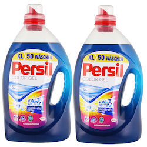

Über
1
Ich bin allergisch/intolerant auf…
Filter wählen…
2
Ich suche nach…
Suchen
Produkte gefunden
Entdecke Produkte, die du verträgst.
Produktname

Zutaten
beans, green beans, string beans, berries.
Produktdetails
Achtung: dieses Produkt enthält eine eventuell problematische Zutat.
Reason.